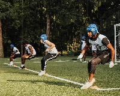

About Us:
The KC Football Academy was founded in 2012 by Dylan Schwarz. Dylan has been a major part of the KC Metro area teaching youth in all walks of life the game. The game is very important to all the coaches here at the KC Football Academy. The game has been played for over 152 years, and because of that our staff has taken personal responsibility to teach your child the right way.
Why Choose Us?
We've Got Experiance:
At the KC Football Academy we have a very diverse coaching staff that come from all walks of life. Some have experiance at the professional level, either coaching or playing. Some Coaches have experiance coaching college student athletes with focus at getting their players to the next level. And Some coaches have experiance coaching highschool and youth level athletes, whith the knowledge of how to get you or your child to develop the skills that will be vidal to move forward with your football career.
Were Local:
 Located in the heart of Kansas City our facility is in an area where you know you or your child will feel comfortable. All of our staff members are members of the Kansas City Metro Area. If you are interested in signing up for our shuttle program, please reach out to us at email.com. The shuttle program is a program designed to drop you kids off at home by one of our very own staff members if you are in a pinch.